Edge Detection is an interesting visions problem. At first, sobel and canny detections seem to work well. However, as the images gain more textures and complexity, they tend to perform badly. One reason why sobel and canny edge detections fail in these situations is that they only consider intensity of the image for detecting edges. Here, I strive to achieve better by also considering textures and brightness of the image.
1. First, the program will create a texton map. Texton map is a scoring of a pixel based on its responses to filter banks. The scoring is done by kmeans. This map is created to gain a sense of texture of the image.
Along with the texton map, we will create a brightness map (this is easy: 256*img).
2. Then, the program will create a texture and brightness gradients. The gradients are calculated by looking at the difference of left/right half-discs pairs. Chi-square distance will be used to measure the differences.
The following is a basic algorithm for one half-discs pair.
chi_sqr_dist=img*0
for i=1:num_bins
tmp = 1 where img is in bin i and 0 elsewhere
g_i = convolve tmp with left_mask
h_i = convolve tmp with right_mask
update chi_sqr_dist
end
As shown in the graph, the f-score of the pb-lite beats the canny, and all the baselines.
One can easily notice from below results that pb-lite edge detection eliminates lots of edge noises caused by the textures.
| Canny Edge Detection | pb-lite | |
|
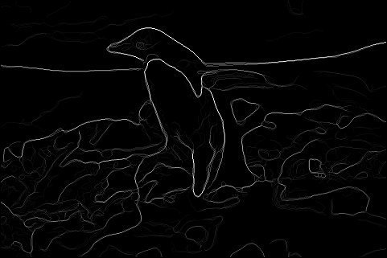 | 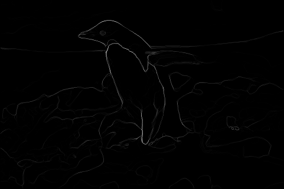 |
| 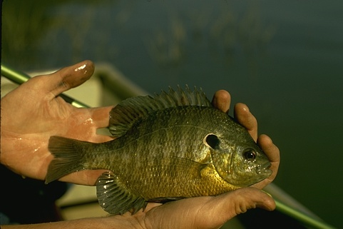 | 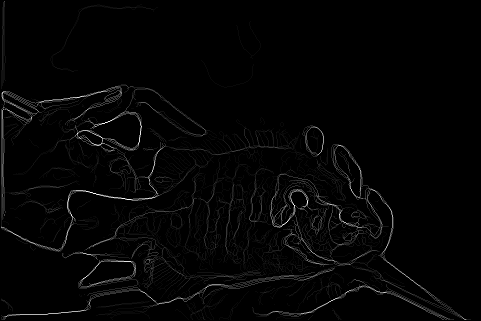 | 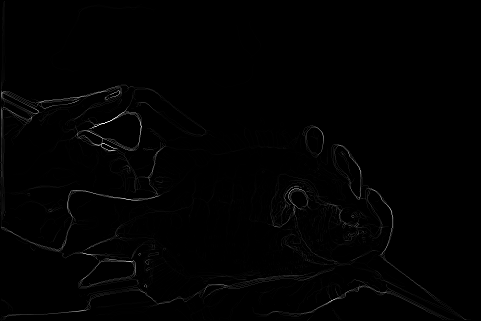 |
|
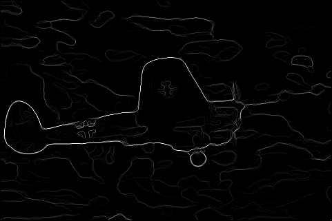 | 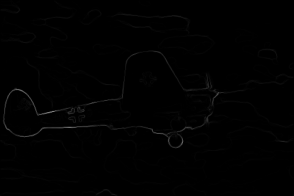 |
|
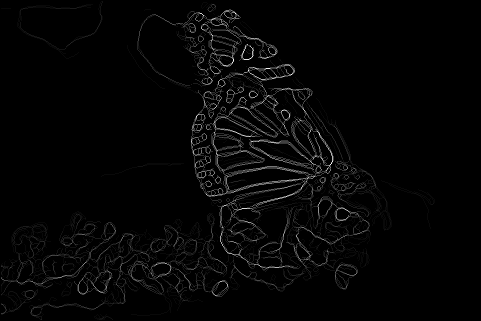 | |
| 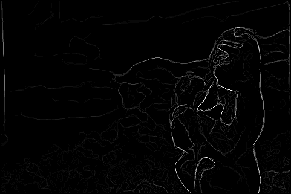 | 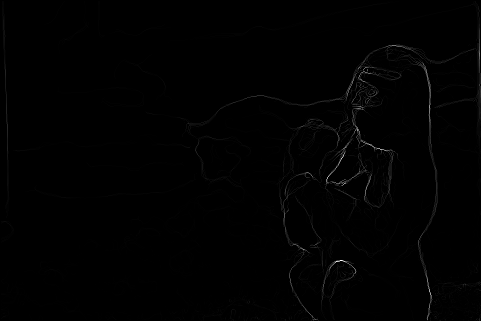 | |
|
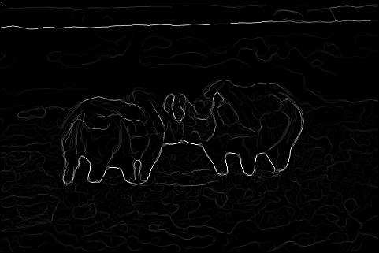 | 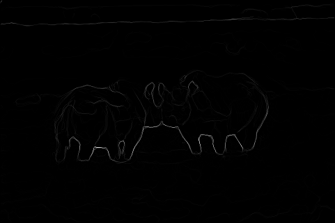 |
| 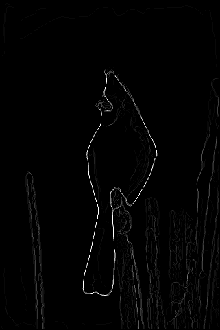 | 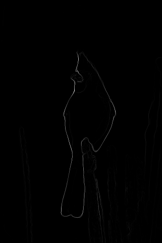 | |
|
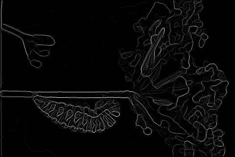 | 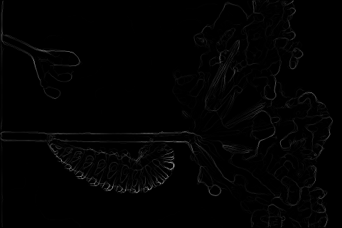 |
| 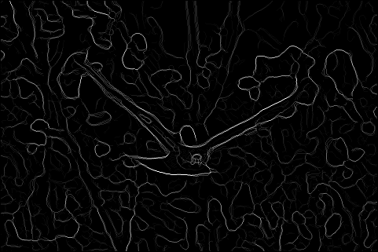 | 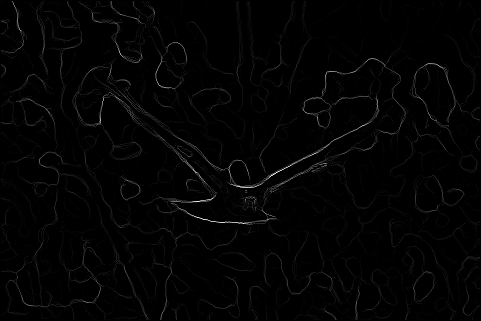 |